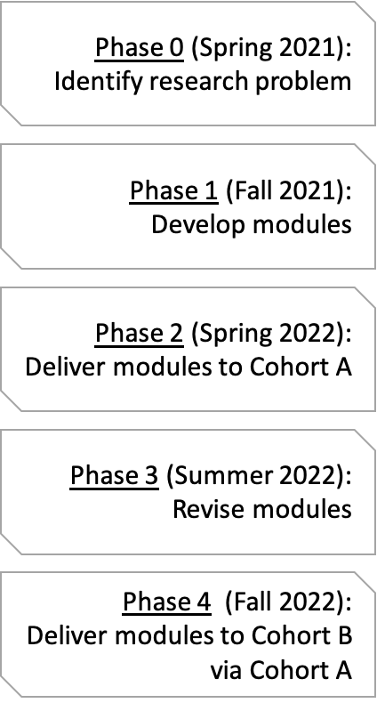

- Introduction
- Developing a new model for a classic hypothesis
- Quantifying the role of coevolution in lineage diversification
- Software process meets the scientific method
- Considerations
- Summary
Coevolving trees and the phylogenetic comparative method
Breanna Sipley
PhD, Bioinformatics and Computational Biology
Outline
Introduction
Big questions
- How do ecological interactions shape the diversification of life?
- Why is parasitism so ubiquitous despite obvious harm to host?
Weinstein & Kuris (2016)
Ehrlich and Raven (1964)
Big questions
- How do ecological interactions shape the diversification of life?
- Why is parasitism so ubiquitous despite obvious harm to host?

Weinstein & Kuris (2016)
Ehrlich and Raven (1964)
Problem
- Cool to think about but hard to study
- No quantitative macro-coevolutionary model
Problem
- Cool to think about but hard to study
- No quantitative macro-coevolutionary model
Conventional methods
- Test congruence between parasite and host
- Map parasite onto host
- Neglect reciprocal selective pressures
Escape-and-radiate coevolution
Ehrlich and Raven (1964)
Thompson (1994)
Escape-and-radiate coevolution
"In escape-and-radiate coevolution, coevolution happens at key moments to drive the evolution of plant defenses and insect counter-defenses, and then other speciation processes (e.g., allopatric speciation) come into play as plants and insects increase their geographic ranges or further subdivide resources."
— Althoff, Segraves, and Johnson (2014)
Ehrlich and Raven (1964)
Thompson (1994)
Escape-and-radiate coevolution
"In escape-and-radiate coevolution, coevolution happens at key moments to drive the evolution of plant defenses and insect counter-defenses, and then other speciation processes (e.g., allopatric speciation) come into play as plants and insects increase their geographic ranges or further subdivide resources."
— Althoff, Segraves, and Johnson (2014)
Let's say we start with

Ehrlich and Raven (1964)
Thompson (1994)
Escape-and-radiate coevolution
"In escape-and-radiate coevolution, coevolution happens at key moments to drive the evolution of plant defenses and insect counter-defenses, and then other speciation processes (e.g., allopatric speciation) come into play as plants and insects increase their geographic ranges or further subdivide resources."
— Althoff, Segraves, and Johnson (2014)
Let's say we start with
Potential scenario

Ehrlich and Raven (1964)
Thompson (1994)
Developing a new model for a classic hypothesis
Background
- Recent exciting progress: explore evolution of interactions in model-based framework
Braga et al (2020, 2021)
Hardy (2016)
Kaczvinsky & Hardy (2020)

Background
- Recent exciting progress: explore evolution of interactions in model-based framework
Problem
- Rely on analogy
- Require a fixed
host phylogeny
Braga et al (2020, 2021)
Hardy (2016)
Kaczvinsky & Hardy (2020)
Objectives
- Develop a novel quantitative model of escape-and-radiate coevolution
- Generate testable macroevolutionary predictions under escape-and-radiate coevolution
Model description
Possible evolutionary events

Model description
Possible coevolutionary scenario
- P extinction → H "escape"
- P host-shift → P "escape"

Quantitative model for escape-and-radiate
- M0: Host speciation independent of parasite extinction
- M1: Host speciation higher after parasite extinction
Quantitative model for escape-and-radiate
- M0: Host speciation independent of parasite extinction
- M1: Host speciation higher after parasite extinction
Methods
- Develop new
Rpackage:coevolve - Simulate host-parasite coevolution:
cophy
Engelstadter & Fortuna (2019)
Proof of concept
Simulations performed in `cophy`
$\kappa = 0$, $\theta_S = 0.1$, $\beta = 0$
Top: $\nu = 0$
Bottom: $\nu = 2$
- Assume we have a powerful parasite
- Higher prob(parasite extinction) → Greater host diversity
Proof of concept
Simulations performed in `cophy`
$\kappa = 0$, $\theta_S = 0.1$, $\beta = 0$
Top: $\nu = 0$
Bottom: $\nu = 2$
- Assume we have a powerful parasite
- Higher prob(parasite extinction) → Greater host diversity

Generate testable macroevolutionary predictions under escape-and-radiate coevolution
- Simulate datasets under null and escape-and-radiate models
- Analyze datasets using suite of coevolutionary methods
- Evaluate to what extent methods can tell them apart
Time-split
Compare summary statistics before and after "escape" events & overall
- Diversification rate (\(r\))
- Relative extinction rate (\(\epsilon\))
- Lineage through time plots
- Tree shape summary stats:
RPANDA
Morlon et al (2016)
Time-split
Compare summary statistics before and after "escape" events & overall
- Diversification rate (\(r\)) -
similar overall; higher after "escape" - Relative extinction rate (\(\epsilon\)) -
higher under escape-and-radiate - Lineage through time plots -
more "bursts" - Tree shape summary stats:
RPANDAtrees less balanced, more pectinateescape-and-radiate events fall out as peaks in spectral densities
Morlon et al (2016)
Cophylogeny reconstruction
Distance-based

Balbuena et al (2013)
Hutchinson et al (2017)
Cophylogeny reconstruction
Distance-based
Balbuena et al (2013)
Hutchinson et al (2017)
Greater phylogenetic
congruence under
escape-and-radiate
Cophylogeny reconstruction
Event-based
Engelstadter & Fortuna (2019)
Conow et al (2010)


Cophylogeny reconstruction
Event-based
Engelstadter & Fortuna (2019)
Conow et al (2010)
Host-shift events will be underestimatedSame for gene tree-species tree methods
Satler et al (2019)
Discrete biogeography
- Extirpation ~ Host-resistance
Dispersal ~ New host

Braga et al (2020, 2021); Hardy (2016)
Kaczvinsky & Hardy (2020)
Discrete biogeography
Extirpation ~ Host-resistance
Dispersal ~ New host"Escape" events coupled
with cladogenetic
("radiation") eventsHost-repertoire
evolution higher
Braga et al (2020, 2021); Hardy (2016)
Kaczvinsky & Hardy (2020)
Models of diversification
BiSSE, HiSSE, Geo(Hi)SSE
Possible rate classes:
- base rate class
- accelerated rate class
Models of diversification
BiSSE, HiSSE, Geo(Hi)SSE
Possible rate classes:
- base rate class
- accelerated rate class
Host enters accelerated rate class after successful "escape" eventGeoHiSSE reconstructs coevolution under escape-and-radiate most accuratelyChanges in rate classes inferred w/ greater certainty for H than P
Maddison, Midford, & Otto (2007)
Goldberg, Lancaster, & Ree (2011)
Beaulieu & O’Meara (2016)
Rabosky and Goldberg (2017)
Ree & Sanmartin (2018)
Caetano, O'Meara, & Beaulieu (2018)
Quantifying the role of coevolution
in lineage diversification
Background
- Few phylogenetic studies interpret their observations through lens of coevolutionary theory
- Coevolutionary theory generates interesting predictions
Background
- Few phylogenetic studies interpret their observations through lens of coevolutionary theory
- Coevolutionary theory generates interesting predictions
Hypotheses
- Antagonistic coevolution promotes lineage diversification
- Mutualistic coevolution does not promote, and may even restrict, the diversification of species
Yoder & Nuismer (2010)
Good news
Many publicly available datasets exist to test these exciting predictions
Good news
Many publicly available datasets exist to test these exciting predictions
Objective
Quantify the effect of coevolution on lineage diversification using phylogenetic meta-analysis
Synthesis
workflow
- Preferred Reporting Items for
Systematic Review and
Meta-Analysis (PRISMA) protocol metagear- Follow criteria for conducting transparent meta-analyses on open data

Moher et al (2015)
Lajeunesse (2016)
Culina et al (2018)
Scoping
- Two monophyletic groups A and B
- Open Tree of Life
- Interaction Web Database
- Global Biotic Interactions
https://tree.opentreeoflife.org
https://iwdb.nceas.ucsb.edu/
https://www.globalbioticinteractions.org/
Searching
- Develop search terms (Librarian ✓)
- Validate search terms using Zeng & Wiens (2021)
Screening
- Recruit help! (GEM3 SARE funding x2)
metagear:effort_distribute,abstract_screener
Lajeunesse (2016)
Coding and extracting data
- Open Tree of Life in
R:rotl - Estimate speciation and extinction rates:
GeoHiSSE - Repeat analyses in Zeng and Wiens (2021)
Michonneau, Brown, & Winter (2016)
Caetano, O'Meara, & Beaulieu (2018)
Traditional meta-analysis
- Goal: get average weighted effect size
- Evaluate homogeneity of effect sizes and test for bias
Reviewed in Lajeunesse (2011)
Traditional meta-analysis
- Goal: get average weighted effect size
- Evaluate homogeneity of effect sizes and test for bias
Effect size
Binary log-response ratio
\[\log_2(R)\]
\(R\) is ratio of the two diversification rates
Zeng and Wiens (2021)
Reviewed in Lajeunesse (2011)
Sources of heterogeneity
- Include potential covariates (e.g, \(\epsilon\), is it a plant, is it a host, genome size)
- Divergence time estimates: TimeTree
- Phylogenetic similarity:
paco
Kumar et al (2017)
Hutchinson et al (2017)
Phylogenetic meta-analysis
- Additional source of bias: pooling effect size data from multiple taxa
- Account for phylogenetic correlations among effect sizes:
PhyloMetaandmetagear - Based on the generalized least squares (GLS) approach
Adams (2008)
Lajeunesse (2009,2011,2016)
Phylogenetic meta-analysis
Effects sizes are pooled, weighted by variance-covariance matrix \(W\)
\[ W = DPD \] If \(P\) is identity matrix, then studies are independent
Otherwise, \(P\) diagonal matrix of phylogenetic correlations
Lajeunesse (2009)
Phylogenetic meta-analysis
Effects sizes are pooled, weighted by variance-covariance matrix \(W\)
\[ W = DPD \] If \(P\) is identity matrix, then studies are independent
Otherwise, \(P\) diagonal matrix of phylogenetic correlations - ⚠
Lajeunesse (2009)
Focus on one partner
- Test importance of type of interaction as predictor of diversification
- Phylogenetic divergence btwn interacting phylogenetics, taxonomic identity, relationship to partner, relative extinction rates
Carmona, Lajeunesse, & Johnson (2011)
Focus on one partner
- Test importance of type of interaction as predictor of diversification
Phylogenetic divergence btwn interacting phylogenetics, taxonomic identity, relationship to partner, relative extinction rates
Parasitism affects diversification differently inPlants than animalsHosts than parasites
Extinction is important under escape-and-radiate
Carmona, Lajeunesse, & Johnson (2011)
Software process meets the scientific method
A train-the-trainer model of computational empowerment for biologists
- Technology → data!
- Cumbersome datasets
- Foundational computational tools ✓
A train-the-trainer model of computational empowerment for biologists
- Technology → data!
- Cumbersome datasets
- Foundational computational tools ✓
Problem
No practical experience integrating software process into scientific method
Objective
To specifically tailor development of a new Vertically Integrated Project (VIP) course focusing on how software process tools such as version control and test-driven development can help meet the needs of researchers while supporting the reproducibility of science
Objective
To specifically tailor development of a new Vertically Integrated Project (VIP) course focusing on how software process tools such as version control and test-driven development can help meet the needs of researchers while supporting the reproducibility of science
Overview
- Work with EPSCoR researchers to identify a suitable problem and dataset
- Create modules to walk through solving problem using software process
- Deliver modules through VIP course
- Self-sustaining by design
VIP
Phases

Conceptual
framework

Learning objectives

Recruitment plan
Cohort A
- Certified Carpentry instructors
- IMCI-sponsored Carpentries workshops
- Flyer distributed widely
Recruitment plan
Cohort A
- Certified Carpentry instructors
- IMCI-sponsored Carpentries workshops
- Flyer distributed widely
Cohort B
- Undergraduate research offices
- SSS-TRiO
- SACNAS
- Palouse Pathways
Research goals
- Consult with EPSCoR affiliates to identify a suitable research problem
- Erect a novel pedagogical framework
- Science education paper introducing the new train-the-trainer model
Data acquisition
- Survey participants' confidence before and after course in
- Writing code to analyze large, cumbersome datasets
- Teaching computational skills to novices and intermediate learners
- Collaborate to identify other metrics for comparison (e.g., extent to which learning objectives met)
- Examine the reproducibility of code
- Assess extent to which product meets the desired requirements
Data acquisition
- Survey participants' confidence before and after course in -
improve- Writing code to analyze large, cumbersome datasets
- Teaching computational skills to novices and intermediate learners
- Collaborate to identify other metrics for comparison (e.g., extent to which learning objectives met) -
equal gains - Examine the reproducibility of code -
good - Assess extent to which product meets the desired requirements -
good
Ethics
- IRB (Human Research Protections) Coordinator at UI
- Exempt Category 1 or 2
- Human subjects training
- Data handled and stored securely
- Participation voluntary (Informed Consent Form)
- Responsible Conduct of Research training
Considerations
Timeline

C2: Escape-and-radiate model
C3: Meta-analysis
C4: Train-the-Trainer
Future directions
- Assess the extent to which escape-and-radiate coevolution emerge across the tree of life
- Extend
coevolveto include additional models
Summary
Intellectual merit
- First-author paper: performance of methods in detecting escape-and-radiate coevolution
- Phylogenetic meta-analysis: role of coevolution on lineage diversification
- Pedagogical innovation paper: train-the-trainer model of computational empowerment for biologists
Broader impacts
- Foundation for cophylogenetic comparative framework
- Empowerment of more diverse, collaborative, and inclusive professoriate
- Support reproducibility of science
- Increase computational literacy of biologists
- Independent research experiences for 3 undergraduates
- Doctoral training for me
Acknowledgements
Committee
Luke Harmon*
Christine Parent
Aleta Quinn
Jack Sullivan
Rockstar labmates
Kristen Martinet
Orlando Schwery
BCB
Lisha Abendroth
Dave Tank
Ancestral Skate Reconstruction
Co-working friends
Fellowship of the Snorks
Resources
NSF GRFP, IMCI, EPSCoR GEM3 VIP
IBEST CRC
Raven Scholars, CDAR, CTC
COGS, Dean of Students